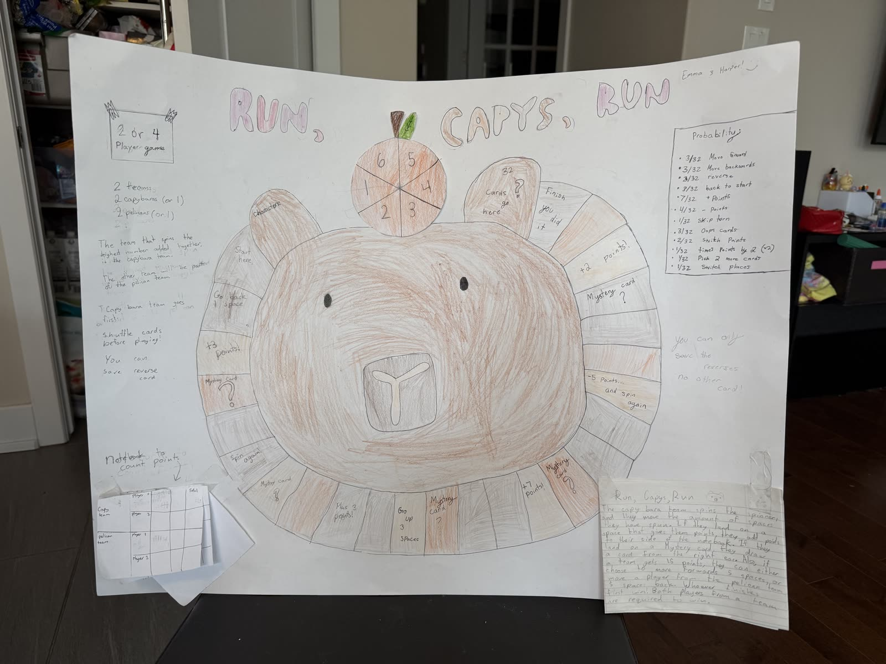
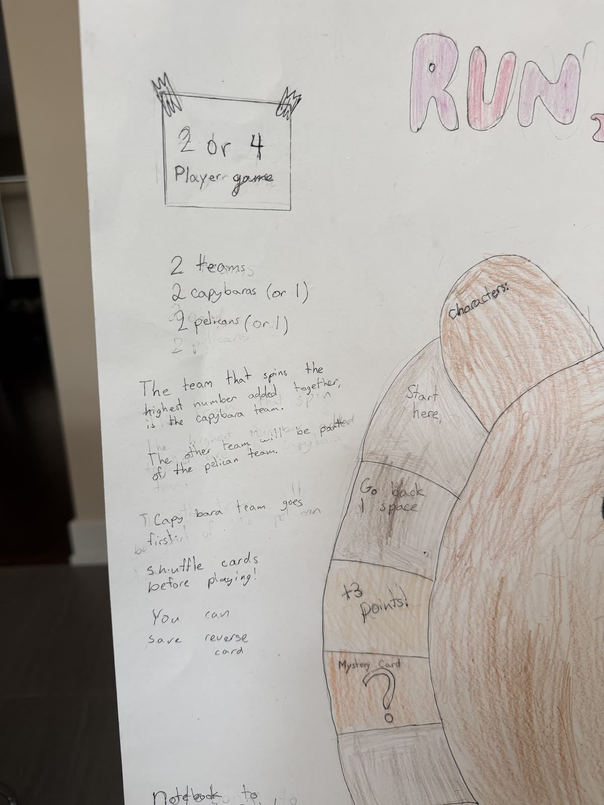
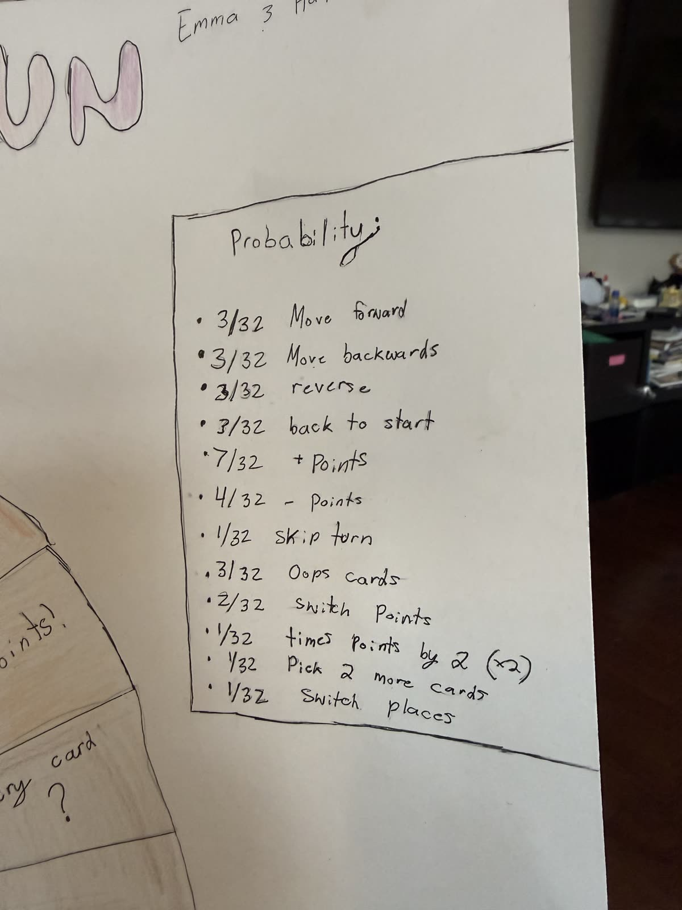

Characters
Mystery cards
Design reference
Poster pictures
First spin to pick teams. In a 2 player game, the highest spin becomes the Capys team. In a 4 player game, players 1 and 2 add their spins, players 3 and 4 add theirs, and the higher total becomes the Capys team.
Spin and move counter-clockwise around the capybara board. Pieces move one space at a time. If a spin goes past Finish, the piece bounces back the extra spaces. When you land on a labeled square, press the raised board space to use it. Mystery spaces draw a card right away, then the card pops up so the player who drew it can read it and tap it to play. A saved reverse can be used when the other team plays a mystery card with a clear opposite, turning moves and points the other way.
Every 15 points unlocks a choice: move your current player up 5 spaces or move the other team's leading player down 5 spaces.
A team wins as soon as one of its players reaches the Finish square.


